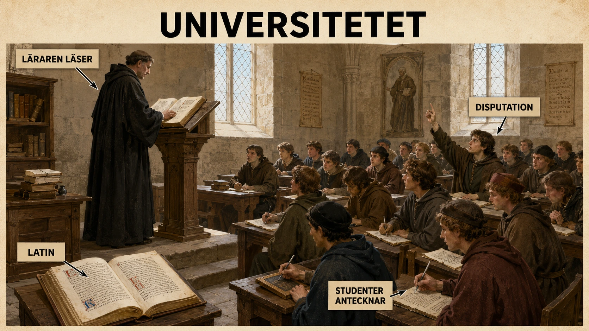
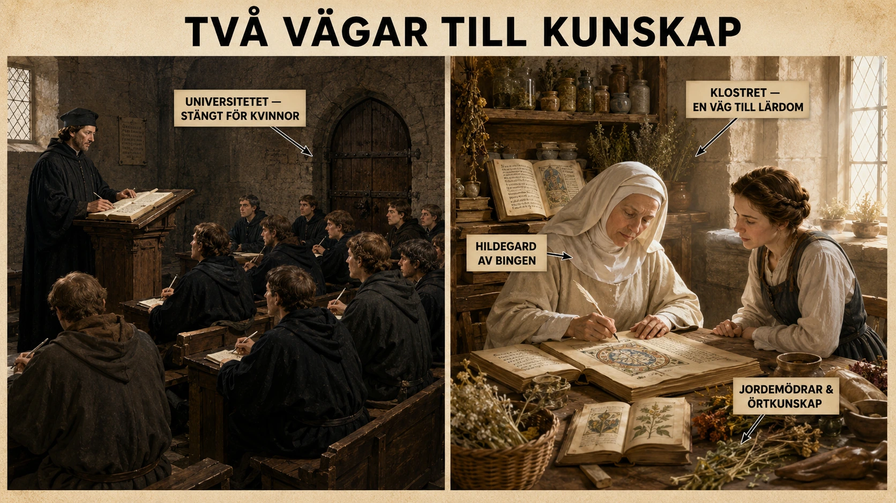
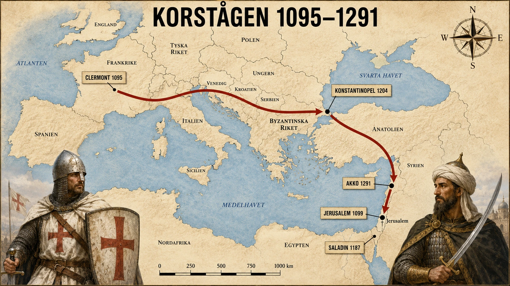

— när lärdomen blev en institution och tron blev ett krig —
Universitetens verksamhet och organisation
Under medeltiden växte de första universiteten fram i Europa. De äldsta fanns i städer som Bologna, Paris och Oxford, och de grundades från 1100-talet och framåt. Ordet universitet kommer från latinets universitas, som betyder "gemenskap". Ett universitet var alltså från början inte en byggnad. Det var en gemenskap av lärare och studenter.
Varför uppstod universiteten?
Samhället förändrades. Städerna växte, handeln ökade och kyrkan, kungar och städer behövde utbildade människor — jurister, skrivare, präster, läkare. Därför ökade behovet av högre utbildning.
Hur var ett universitet organiserat?
Universitetet fungerade som ett eget litet samhälle. Det hade egna regler, egna ledare och vissa privilegier. Studenter och lärare kunde stå under kyrkans skydd och dömas av kyrkan i stället för stadens domstol. Lärarna var ofta präster eller munkar. Undervisningen skedde på latin, vilket gjorde att en student från England kunde studera i Paris och förstå allt.
Studenterna delades in i "nationer" — grupper efter var de kom från. Lärarna var organiserade ungefär som ett hantverksskrå.
Vad studerade man?
Studierna började med de sju fria konsterna, indelade i två grupper:
Trivium (språk och tänkande): grammatik, retorik, logik. Quadrivium (tal och natur): aritmetik, geometri, musik, astronomi.
Efter grunden kunde studenten gå vidare till de högre ämnena: teologi (läran om Gud), juridik (lag och rätt) och medicin. Teologi sågs som det högsta ämnet, men juridik blev allt viktigare när städer och kungar behövde utbildade ämbetsmän.
Hur undervisades man?
Böcker var dyra — de skrevs för hand. Därför läste läraren högt ur en text och förklarade den. Studenterna lyssnade, antecknade och memorerade.
En viktig metod var disputation. Läraren ställde en fråga, till exempel "Kan människan förstå Gud med förnuftet?" Studenterna prövade argument för och emot. Till slut sammanfattade läraren det mest rimliga svaret.
Varför var universiteten viktiga?
De utbildade människor till kyrka, hov, stat och städer. De skapade en gemensam lärd kultur i Europa — samma språk (latin), samma metoder, samma ämnen. En student kunde resa från Oxford till Bologna och känna sig hemma i undervisningen.
Medeltiden var alltså inte bara krig och jordbruk. Det var också en tid då Europa byggde upp sina första intellektuella miljöer.
Under medeltiden började Europas första universitet växa fram. De äldsta och mest kända universiteten låg i städer som Bologna, Paris och Oxford. De grundades ungefär från 1100-talet och framåt. Ordet universitet kommer från latinets universitas, som betyder ungefär "sammanslutning" eller "gemenskap". Ett universitet var alltså från början inte bara en byggnad, utan en gemenskap av lärare och studenter.
Universiteten växte fram därför att samhället förändrades. Städerna blev större, handeln ökade och kyrkan behövde utbildade personer som kunde läsa, skriva, tolka lagar och förstå kristen lära. Kungar, furstar och städer behövde också människor som kunde arbeta som jurister, skrivare, rådgivare och läkare. Därför blev utbildning allt viktigare.

Föreläsningen — universitetets hjärta. Läraren läser en text, studenterna antecknar, och då och då bryts framställningen av en disputation där studenter argumenterar för och emot en stridsfråga. Allt sker på latin, det gemensamma språket för Europas lärda.
Universitetet som en självständig gemenskap
Ett medeltida universitet fungerade ungefär som ett eget litet samhälle. Det hade ofta särskilda regler, egna ledare och vissa privilegier. Studenter och lärare kunde ibland stå under kyrkans skydd och dömas enligt kyrkans lagar i stället för stadens vanliga lagar. Det gjorde att universitetet fick en ganska stark och självständig ställning.
Universitetet leddes ofta av en rektor eller av ledande lärare. Lärarna var organiserade i olika grupper, ungefär som skrån inom hantverket. Studenterna kunde också organisera sig efter vilket område de kom ifrån. I vissa universitetsstäder delades studenterna in i så kallade "nationer", till exempel grupper för studenter från olika delar av Europa.
Det var vanligt att universitetet hade stark koppling till kyrkan. Många lärare var präster eller munkar, och undervisningen skedde ofta på latin. Latin var kyrkans och de lärdas språk. Det betydde att en student från England, Frankrike, Italien eller Tyskland kunde studera vid samma universitet och förstå undervisningen, om han kunde latin.
Vad studerade man?
Studierna började ofta med de så kallade sju fria konsterna. De delades in i två grupper.
Trivium handlade om språk och tänkande: grammatik, retorik och logik.
Quadrivium handlade mer om tal, natur och ordning: aritmetik, geometri, musik och astronomi.
Detta var grunden. Efter de första studierna kunde studenten gå vidare till högre ämnen. De viktigaste högre ämnena var teologi (läran om Gud och kristendomen), juridik (lag och rätt) och medicin (läkekonst och människokroppen).
Teologi sågs ofta som det högsta ämnet, eftersom kyrkan var så mäktig och eftersom religionen påverkade hela samhället. Men juridik blev också mycket viktigt, särskilt när kungar och städer behövde utbildade män som kunde skriva avtal, tolka lagar och arbeta i förvaltningen.
Hur undervisningen gick till
Undervisningen var mycket annorlunda jämfört med dagens skola. Böcker var dyra eftersom de skrevs för hand innan boktryckarkonsten slog igenom. Därför var det vanligt att läraren läste högt ur en text och sedan förklarade den. Studenterna lyssnade, antecknade och memorerade.
En viktig metod var disputation. Det betydde att man tränade på att argumentera. Läraren kunde ställa en fråga, till exempel: "Kan människan förstå Gud med förnuftet?" Sedan fick studenterna pröva olika argument för och emot. Till slut sammanfattade läraren vilket svar som ansågs mest korrekt.
Det här gjorde att universiteten blev platser där man tränade logiskt tänkande, argumentation och noggrann texttolkning. Målet var inte i första hand att uppfinna helt nya idéer, utan att förstå, ordna och förklara kunskap som redan ansågs viktig. Mycket byggde på Bibeln, kyrkofäderna och antika författare som Aristoteles.
Varför universiteten var viktiga
Universiteten fick stor betydelse för Europas utveckling. De utbildade personer som kunde arbeta i kyrkan, vid kungliga hov, i städernas administration och inom juridik och medicin. De bidrog också till att skapa en gemensam lärd kultur i Europa. En student kunde resa från ett land till ett annat och ändå känna igen språket, ämnena och sättet att studera.
Universiteten visar också att medeltiden inte bara var en tid av krig och jordbruk. Det var även en tid då utbildning, textstudier och intellektuella miljöer växte fram. Kyrkan hade stor makt över kunskapen, men universiteten blev samtidigt platser där människor tränades i att diskutera, jämföra argument och tänka systematiskt.
En ny sorts institution
När de första universiteten började ta form på 1100-talet hände något i Europa som ingen riktigt hade planerat. I städer som Bologna, Paris och Oxford samlades studenter och lärare i grupper som kallade sig universitas — en gemenskap. Detta var inte en byggnad och inte en kungens skola. Det var människor som band sig samman, ungefär som hantverkarna band sig samman i sina skrån.
Det är värt att stanna vid det ordet — universitas. Det visar att universitetet från början inte var en plats utan en organisation. En lärargemenskap. Och det är en av historiens viktiga insikter: institutioner som senare blir mäktiga och permanenta börjar ofta som tillfälliga sammanslutningar för att lösa ett problem. Problemet på 1100-talet var att samhället hade blivit för komplicerat för att skötas av outbildade människor.
Varför just nu?
Frågan "varför växte universiteten fram just under högmedeltiden?" har ett ganska tydligt svar. Det berodde på att efterfrågan hade förändrats.
Städerna blev större och rikare. Handeln behövde män som kunde skriva avtal och tolka lagar. Kyrkan hade vuxit till en enorm internationell organisation som krävde administratörer, jurister och teologer som kunde försvara läran. Kungar och furstar behövde rådgivare som klarade av en komplicerad förvaltning. Allt detta krävde personer som kunde läsa — och göra det noggrant, på latin, i en värld där en feltolkad mening i ett kungligt brev kunde betyda krig.
Tidigare hade utbildning främst skett i katedralskolor och kloster. Men dessa räckte inte längre till. Universiteten växte fram ur de befintliga lärda miljöerna, men gjorde något nytt: de samlade studenter från hela Europa i städer som blev internationella nav för kunskap.
Ett samhälle i samhället
Det medeltida universitetet var organiserat som ett eget litet rättsystem. Studenter och lärare kunde stå under kyrkans skydd, vilket innebar att de dömdes av kyrkans domstolar och inte av stadens. Det var en betydande förmån. En berusad student som hamnade i bråk på en krog kunde inte hängas av stadens vakter — han var kyrkans angelägenhet.
Universitetet leddes ofta av en rektor som valdes bland studenterna eller lärarna, beroende på stad. I Bologna styrde studenterna sitt universitet och anställde lärarna. I Paris hade lärarna huvudmakten. Studenterna organiserade sig efter ursprung i grupper kallade nationer — engelsmännen för sig, fransmännen för sig, tyskarna för sig. Detta var praktiskt: i en främmande stad höll man ihop med sina landsmän.
Latin var det enande språket. För en student från Skottland som ville studera i Bologna räckte det att han kunde latin — då kunde han förstå föreläsningen, läsa texterna och argumentera. Det skapade något helt nytt: en europeisk lärdomssfär där en bok skriven i Paris kunde läsas i Salamanca och en metod utvecklad i Oxford kunde diskuteras i Köln.
Studierna — grunden och tornet
Studievägen var lång. Den började med de sju fria konsterna, ett system som ärvts från antiken. Trivium — grammatik, retorik och logik — handlade om språk, övertygelseförmåga och argumentation. Quadrivium — aritmetik, geometri, musik och astronomi — handlade om tal, mönster och naturens ordning. Att musik hörde till matematikens fält kan verka konstigt, men medeltidens tänkare uppfattade musiken som klingande matematik: intervaller som tal, harmoni som proportion.
Först efter att studenten klarat de fria konsterna kunde han gå vidare till de tre högre fakulteterna: teologi, juridik och medicin. Teologi var det högsta — läran om Gud, det yttersta målet för all kunskap. Juridik var praktiskt viktigast — hela förvaltningssystemet i Europa byggde på utbildade jurister. Medicin var minst utvecklad, men växte snabbt under inflytande från översättningar av arabiska och grekiska texter.
Den medeltida klassrumskulturen
Undervisningen är värd att stanna vid, för den ser så annorlunda ut än vår. Böckerna var enormt dyra — varje exemplar skrevs för hand på pergament och kunde kosta lika mycket som ett litet hus. Därför ägde få studenter egna böcker. I stället läste läraren högt ur en text — lectio — och kommenterade den medan studenterna antecknade.
Men det fanns en mer levande sida av undervisningen: disputationen. Läraren formulerade en stridsfråga — quaestio — som exempelvis "Kan människan med förnuftet bevisa Guds existens?" Studenter och lärare argumenterade för och emot. Argument möttes av motargument. Bevis prövades mot bevis. Till sist sammanfattade läraren vilken slutsats som verkade hålla bäst.
Denna metod är en av medeltidens stora gåvor till världen. Den lärde människor att inte bara säga något, utan att också försvara det med argument. Den krävde att den som ville övertyga också måste lyssna på motståndaren och svara på dennes bästa invändningar. Det är en intellektuell disciplin som vi fortfarande använder i forskning, juridik och politik.
Vad det blev av
Universiteten blev fundament i Europas utveckling. De utbildade generation efter generation av jurister, läkare, präster och ämbetsmän. De skapade en gemensam intellektuell kultur. De gjorde Europa till en kontinent där en lärd person kunde förvänta sig att möta likasinnade från andra länder — och förstå dem.
Men de var också konservativa. Universiteten såg sin uppgift som att bevara och tolka redan accepterad kunskap, inte att uppfinna nya tankar. Aristoteles, Bibeln, kyrkofäderna och de romerska juristerna sågs som auktoriteter som skulle förstås och försvaras. Det skulle dröja flera hundra år innan idén att kunskap kan växa — att vi kan veta mer än de gamla — slog igenom på allvar.
Ändå: utan universiteten ingen renässans, ingen reformation, ingen vetenskaplig revolution. De var infrastrukturen som senare epoker byggde på. När man går in i en föreläsningssal i dag, oavsett ämne, sitter man i en tradition som började i en handfull medeltida städer på 1100-talet.
Hur universitetens utveckling påverkade kvinnorna
När universiteten växte fram blev utbildning viktigare för att få bra arbete. Men universiteten var nästan bara öppna för män. Det fick stora följder för kvinnorna.
Stängda dörrar
Studenter och lärare vid de medeltida universiteten var nästan alltid män. En orsak var att universiteten hade nära band till kyrkan, och kyrkans yrken — präst, biskop, kyrklig administratör — var öppna bara för män.
En annan orsak handlade om vägen in. För att börja vid universitetet måste man redan kunna latin, grammatik och logik. Den utbildningen fick framför allt pojkar, ofta i kyrkliga skolor. Flickor undervisades oftare hemma eller i kloster. Det innebar att redan dörren till universitetet var stängd för de flesta.
Kvinnors kunskap fanns — men räknades inte alltid
Det betyder inte att medeltidens kvinnor var okunniga. Många hade omfattande kunskap inom läkekonst, vård, förlossningar, jordbruk, handel och hantverk. De var jordemödrar, örtmedicinare, husmödrar i stora hushåll, deltog i familjeföretag och kunde driva verksamheter när männen var borta.
Men deras kunskap byggde på erfarenhet och tradition — inte på böcker och examina. När medicin blev ett universitetsämne fick boklig kunskap högre status än praktisk. Den manliga universitetsläkaren ansågs lärd. Den kvinnliga jordemodern ansågs hantverkare.
Klostret — en alternativ väg
Det fanns ändå kvinnor som fick tillgång till bildning, framför allt i nunnekloster. Där kunde de lära sig läsa, skriva, sjunga, studera religiösa texter och ibland själva skriva böcker.
Ett berömt exempel är Hildegard av Bingen, en tysk abbedissa på 1100-talet. Hon skrev om religion, musik, natur och läkekonst, och påvar och kejsare lyssnade på hennes råd. Hon visar att kvinnor kunde nå hög lärdom — men vägen gick via klostret, inte universitetet.
Vad konsekvenserna blev
Eftersom universiteten blev en väg till makt — till yrken som präst, jurist, läkare, ämbetsman — och kvinnor stängdes ute, blev de också utestängda från många maktpositioner. En man med examen kunde säga "jag är läkare" eller "jag är jurist". En kvinna med samma eller större praktiska kunskap saknade titel.
Det betyder inte att alla kvinnor saknade makt. Adliga kvinnor styrde gods. Borgarkvinnor drev hantverk. Nunnor påverkade religiöst liv. Men den formella, examinerade lärdomen — den som gav titlar och offentlig makt — var stängd.
När universiteten växte fram under medeltiden skapades nya möjligheter för utbildning och yrken. Men dessa möjligheter gällde nästan bara män. För kvinnor blev universitetens utveckling därför både viktig och problematisk. Den skapade mer utbildning i samhället, men den stängde samtidigt ute kvinnor från många lärda yrken.

Två vägar till kunskap — bara en av dem öppen för kvinnor. Universitetet stod stängt. Klostret kunde däremot bli en lärd miljö, och där växte några av medeltidens mest inflytelserika kvinnor fram. Men vägen var smal, och nådde aldrig samma formella status som männens examina.
Kvinnor hade svårt att få tillträde
De medeltida universiteten var i praktiken manliga miljöer. Studenterna var nästan alltid män, och lärarna var män. En viktig orsak var att universiteten hade nära koppling till kyrkan. Många studenter utbildades för kyrkliga eller administrativa yrken, och dessa yrken var i huvudsak öppna för män.
Dessutom byggde universitetsstudierna på latin. För att kunna studera behövde man först ha gått i en skola där man lärt sig latin, grammatik och logik. Sådan utbildning gavs främst till pojkar från rika familjer, adliga miljöer eller kyrkliga sammanhang. Flickor fick oftare undervisning i hemmet eller i kloster, men de hade sällan samma väg in till de högre studierna.
Det betyder inte att kvinnor var okunniga. Många kvinnor kunde mycket, särskilt inom hushåll, handel, hantverk, läkekonst, jordbruk och religiöst liv. Men deras kunskap räknades inte alltid som "lärd" kunskap på samma sätt som männens universitetsutbildning.
Kvinnors äldre kunskap trängdes undan
Innan universiteten blev starka fanns det kvinnor som arbetade med vård, läkekonst och förlossningar. De kunde vara jordemödrar, örtmedicinare eller lokala läkekunniga. Deras kunskap byggde ofta på erfarenhet och tradition. De hade lärt sig genom praktik, familj, bygemenskap eller kloster.
När universiteten utvecklades började medicin bli ett mer formellt ämne. Det blev något som skulle studeras genom böcker, föreläsningar och examina. Eftersom kvinnor oftast inte fick studera vid universiteten kunde de inte få samma formella status som manliga läkare.
Konsekvensen blev att vissa yrken och kunskapsområden blev mer manligt dominerade. Det som tidigare kunde vara kvinnors praktiska kunskap började ibland ses som mindre värdefullt än den bokliga kunskap som männen fick vid universiteten.
Klostren gav vissa kvinnor utbildning
Det fanns ändå kvinnor som fick tillgång till bildning. Särskilt viktiga var nunnekloster. I kloster kunde kvinnor lära sig läsa, skriva, sjunga kyrklig musik, studera religiösa texter och ibland skriva egna verk. Vissa nunnor blev mycket lärda.
Ett känt exempel är Hildegard av Bingen, en tysk abbedissa på 1100-talet. Hon skrev om religion, musik, natur och läkekonst. Hon visar att kvinnor kunde spela en viktig roll i medeltidens kunskapsliv, även om de oftast inte fick plats vid universiteten.
Men klostervägen var inte öppen för alla. Den krävde ofta familjens stöd och passade främst kvinnor från mer privilegierade grupper. För de flesta kvinnor var utbildningsmöjligheterna fortfarande begränsade.
Universitetens utveckling förstärkte skillnaden mellan män och kvinnor
När universitetens betydelse ökade blev utbildning en väg till makt. Den som hade examen kunde få arbete inom kyrkan, staten, juridiken eller medicinen. Eftersom kvinnor nästan alltid stängdes ute från universitetet stängdes de också ute från många maktpositioner.
För det första fick kvinnor sämre möjlighet att bli erkända som experter. En man med universitetsutbildning kunde säga: "Jag är läkare" eller "Jag är jurist". En kvinna kunde ha stor praktisk kunskap, men saknade ofta examen och formell titel.
För det andra minskade kvinnors möjlighet att påverka samhällets lagar, kyrkliga beslut och vetenskapliga diskussioner. De viktigaste miljöerna där texter skrevs, tolkades och användes var mansdominerade.
För det tredje bidrog universiteten till att forma idéer om vad män och kvinnor "borde" göra. Män kopplades starkare till studier, ämbeten och offentligt ansvar. Kvinnor kopplades oftare till hem, familj, omsorg och religiös fromhet.
Men utvecklingen var inte enkel
Det är viktigt att inte tänka att alla kvinnor saknade makt eller kunskap. Kvinnor kunde påverka samhället på andra sätt. Adliga kvinnor kunde styra gods, ordna äktenskap, påverka politik och stödja kyrkor eller kloster. Borgarkvinnor kunde delta i handel och hantverk, särskilt i familjeföretag. Nunnor kunde ha religiös och kulturell betydelse.
Men universitetens framväxt gjorde att den mest prestigefyllda kunskapen blev mer formellt organiserad — och där hade kvinnor mycket svårt att komma in. Därför blev utvecklingen dubbel: samhället fick fler utbildade personer, men utbildningsvägen blev främst en väg för män.
En vinnare och en förlorare
När historiker försöker beskriva en historisk förändring brukar de fråga: vem vann och vem förlorade på den? Universitetens framväxt under högmedeltiden är ett intressant exempel, för svaret är dubbelt. Samhället som helhet vann — fler människor blev utbildade, kunskap organiserades systematiskt, juridik och medicin blev mer avancerade. Men vem som blev utbildad var inte slumpmässigt. Universiteten skapade en ny väg till makt — och den vägen var nästan helt stängd för halva befolkningen.
Den stängda porten
Universiteten var manliga miljöer från första början. Studenter, lärare, rektorer, präster, ämbetsmän — alla män. Det berodde inte på en enstaka regel eller ett enskilt beslut. Det berodde på en kedja av förutsättningar.
Den första porten var språket. Universitetsundervisning skedde på latin. För att lära sig latin behövde man gå i förberedande skola — och dessa skolor tog främst emot pojkar. De allra flesta latinskolor var kopplade till katedraler och kloster och utbildade framtida präster och ämbetsmän. Flickor fick undervisning, men oftast i hemmet eller i nunnekloster, och sällan på den nivå som krävdes för universitetet.
Den andra porten var yrkesvägen. Universitetet utbildade för yrken som var stängda för kvinnor: präst, biskop, kyrklig administratör, ämbetsman i kunglig förvaltning, professor. När yrket var stängt blev det meningslöst att utbilda en kvinna för det. Och eftersom inga kvinnor utbildades, fanns ingen som kunde kräva förändring inifrån.
Den tredje porten var den sociala. Att skicka en dotter att leva tillsammans med hundratals manliga studenter i en stad som Paris eller Bologna var otänkbart för de flesta familjer. Universiteten hade dessutom egen jurisdiktion under kyrkan — och studentlivet var ofta råbarkat, med slagsmål, krogliv och prostitution i kvarteren runt universitetet.
När boklärdom slog ut erfarenhet
Det är här utvecklingen blir verkligt intressant — och problematisk. Innan universiteten blev mäktiga var kunskap om medicin, läkekonst och vård spridd brett i samhället, ofta hos kvinnor. Jordemödrar hjälpte vid förlossningar. Örtkunniga kvinnor behandlade sjukdomar med växter. Husmödrar i större hushåll var ansvariga för familjens hälsa — det fanns ingen sjukvård att kalla på, så kunskapen om vad man gjorde vid feber, sår eller barnsjukdomar måste finnas i hemmet.
När medicin blev ett universitetsämne förändrades något. Den utbildade läkaren — alltid en man — kunde säga: "Min kunskap kommer från Galenos, från Avicenna, från Hippokrates." Han hade läst böcker, gjort disputationer, fått examen. Han hade en titel. Jordemodern hade lärt sig av sin mor och sin mormor. Hon hade ingen titel.
Långsamt under medeltiden började man göra åtskillnad mellan "lärd medicin" (universitetsmedicin) och "folkmedicin" (praktisk erfarenhet). Den lärda fick högre status. Den praktiska sjönk i värde — trots att den ofta var lika effektiv eller mer effektiv, eftersom universitetsmedicinen länge byggde på teorier (om "vätskor" i kroppen) som var felaktiga.
Det skapade en historisk konstighet: kunskap som hade fungerat i generationer förlorade i status mot kunskap som ofta var sämre, bara för att den var skriven i en bok och försvarad med argument på latin.
Klostret — en spricka i muren
Ändå fanns en väg för kvinnor som ville nå hög bildning: klostret. Nunnekloster, särskilt de stora och välbärgade, fungerade som lärda miljöer för kvinnor. Där kunde de läsa, skriva, studera Bibeln och kyrkofäderna, lära sig sjunga den komplicerade kyrkliga musiken, kopiera böcker — och ibland själva författa.
Den mest berömda är Hildegard av Bingen (1098–1179), en tysk benediktinsk abbedissa som blev en av sin tids mest inflytelserika röster. Hon skrev teologiska visioner, komponerade musik som fortfarande framförs i dag, författade två omfattande verk om naturen och läkekonsten, och brevväxlade med påvar, kejsare och kungar. Hon predikade öppet i städer — något ingen annan kvinna på hennes tid gjorde. Andra exempel är Heloïse, abbedissan vid Paraclet som var en av sin tids mest lärda människor, och flera anonyma nunnor som skrev historiska krönikor och religiösa traktater.
Men klostervägen var smal. Den krävde att familjen hade råd att skänka en dotter till klostret med en betydande "hemgift". Den passade främst kvinnor från adel och rik borgarklass. För en bondkvinna eller stadens fattiga var den lika otillgänglig som universitetet.
Vad universitetens framväxt egentligen gjorde
Här är den stora poängen. Universitetens framväxt skapade inte könsskillnaderna i Europa — de fanns redan. Men de förstärkte och institutionaliserade dem på ett nytt sätt. När kunskap blev ett systematiskt, examinerat, titelförsett fält, blev uteslutningen av kvinnor också mer systematisk.
Tidigare hade en skicklig kvinnlig örtkunnig och en skicklig manlig munk i ett kloster båda kunnat ses som lärda inom sina områden. Nu fanns en formell hierarki: med examen i toppen, utan examen i botten. Och eftersom kvinnor inte kunde få examen, hamnade de strukturellt i botten — oavsett hur kunniga de var.
Det är ett mönster vi sett om och om igen i historien: när ett område professionaliseras, när det får licenser, examina, formell organisation — då stänger ofta de redan etablerade grupperna ute andra. Universiteten är ett av de tidigaste och tydligaste exemplen.
Det som ändå rörde sig
Men det vore fel att måla bilden helsvart. Medeltidens kvinnor saknade inte makt. Adliga kvinnor kunde styra gods när männen var i krig eller på korståg, förvalta enorma egendomar och fatta beslut som påverkade tusentals människor. Borgarkvinnor drev hantverk i familjeföretag och kunde överta verksamheter som änkor. Nunnor kunde ha religiös och politisk betydelse på en nivå som få nutida kvinnor i något yrke skulle kunna mäta sig med. Vissa stadskvinnor — bryggare, vävare, sömmerskor — drev egna företag och betalade egna skatter.
Universitetens framväxt skapade alltså inte en värld där kvinnor saknade allt inflytande. Men den skapade en värld där en särskild sorts makt — den formella, examinerade, juridiskt eller religiöst sanktionerade — i hög grad blev mäns. Det skulle dröja till 1800-talet innan kvinnor i större skala släpptes in vid universiteten. Innan dess fick kvinnliga lärda — och de fanns alltid, i alla generationer — hitta vägar runt institutionen.
Korstågen: orsaker, händelser och konsekvenser
Korstågen var militära expeditioner som kristna européer genomförde under medeltiden. De viktigaste riktades mot östra Medelhavsområdet och Jerusalem, men korståg kunde också riktas mot muslimer i Spanien, hedniska folk vid Östersjön och kristna grupper som kyrkan såg som kättare.
Hur det började
År 1095 höll påven Urban II ett tal i staden Clermont i Frankrike. Där uppmanade han kristna riddare att dra österut för att hjälpa kristna i Bysantinska riket och befria Jerusalem från muslimsk kontroll. Detta blev början på det första korståget.
Varför drog de iväg?
Orsakerna var flera. Religiöst sågs Jerusalem som en helig stad — där hade Jesus levt, dött och uppstått. Påven lovade också att de som deltog kunde få sina synder förlåtna. För en medeltidsmänniska var själens frälsning oerhört viktig.
Politiskt ville påven stärka kyrkans makt och visa att han kunde leda hela kristenheten. Socialt och ekonomiskt sökte många riddare ära, land eller rikedom. Korstågen gav dem en möjlighet att använda sin krigarkunskap "i Guds tjänst".
Vad hände?
Det första korståget lyckades militärt. År 1099 erövrades Jerusalem i en mycket blodig stormning. Korsfararna skapade flera kristna stater i området, så kallade korsfararstater.
Men området var svårt att försvara. Under 1100-talet samlades muslimskt motstånd kring ledaren Saladin, sultan av Egypten och Syrien. År 1187 besegrade han korsfararna vid slaget vid Hattin och återtog Jerusalem. Detta utlöste det tredje korståget, där bland andra Rikard Lejonhjärta deltog — men Jerusalem återtogs inte.
Det fjärde korståget (1202–1204) blev en av historiens märkligaste händelser. Korsfararna nådde aldrig Jerusalem. I stället plundrade de Konstantinopel, huvudstad i det kristna Bysantinska riket. Det försvagade Bysans svårt och fördjupade splittringen mellan väst- och östkyrkan.
Korstågen fortsatte i flera hundra år, men kristna korsfararstater blev allt svagare. År 1291 föll Akko, den sista stora korsfararstaden. Då var de stora korstågen i praktiken över.
Konsekvenser
Korstågen ledde till ökad handel och kontakt mellan Europa och östra Medelhavet. Kryddor, siden, socker och nya idéer kom västerut. Italienska handelsstäder som Venedig och Genua tjänade enormt.
Men korstågen orsakade också krig, plundring och stort lidande i Mellanöstern. De ledde till våld mot judar i Europa när korsfararsmän anföll judiska samhällen i Rhenlandet. De fördjupade splittringen mellan kyrkan i väst och öst, framför allt efter 1204.
Korstågen var militära expeditioner som kristna européer genomförde under medeltiden. De mest kända korstågen riktades mot östra Medelhavsområdet och Jerusalem, men korståg kunde också riktas mot andra grupper, till exempel muslimer i Spanien, hedniska folk kring Östersjön eller kristna grupper som kyrkan ansåg vara kättare.
Det första stora korståget började i slutet av 1000-talet. År 1095 höll påven Urban II ett tal i Clermont i Frankrike. Där uppmanade han kristna riddare och furstar att dra österut för att hjälpa kristna i Bysantinska riket och befria Jerusalem från muslimsk kontroll. Detta blev starten på det första korståget.

Korstågen 1095–1291. Två sekler av krig, pilgrimsfärder, plundring och möten mellan civilisationer. Pilarna visar de stora rörelserna; årtalen markerar vändpunkter. Bakom varje siffra ligger en värld av människor — bönder, riddare, köpmän, präster, muslimer, judar, kristna i öst — som drogs in i ett av medeltidens längsta dramer.
Orsaker till korstågen
Det fanns flera orsaker till korstågen. De handlade inte bara om religion, även om religionen var mycket viktig.
En religiös orsak var att Jerusalem var en helig stad för kristna. Där fanns platser som kopplades till Jesus liv, död och uppståndelse. Många kristna ville kunna vallfärda dit. När påven beskrev korståget som ett heligt uppdrag blev det lockande för många att delta.
En annan religiös orsak var tron på syndernas förlåtelse. Påven lovade att de som deltog i korståget kunde få andliga belöningar. För en människa på medeltiden var frälsning och livet efter döden mycket viktigt. Att delta i ett korståg kunde därför ses som ett sätt att tjäna Gud och rädda sin själ.
Det fanns också politiska orsaker. Påven ville stärka sin makt över Europas kristna. Genom att samla riddare och furstar bakom ett gemensamt mål kunde påven visa att kyrkan hade kraft att leda hela kristenheten.
Det fanns dessutom sociala och ekonomiska orsaker. Många riddare levde i ett samhälle där våld och strider var vanliga. Korstågen gav dem en möjlighet att använda sin krigarkunskap i kyrkans tjänst. Vissa hoppades också vinna land, rikedomar eller ära.
Viktiga händelser
Det första korståget blev militärt framgångsrikt för korsfararna. År 1099 erövrade de Jerusalem. Erövringen blev mycket blodig. Många invånare dödades. Efteråt skapade korsfararna flera kristna stater i området, bland annat kungariket Jerusalem. Dessa brukar kallas korsfararstater.
Men korsfararstaterna var svåra att försvara. De låg långt från Västeuropa och omgavs av muslimska riken. Under 1100-talet började muslimska ledare samla motståndet. En av de mest kända var Saladin, som blev sultan i Egypten och Syrien.
År 1187 besegrade Saladin korsfararna vid slaget vid Hattin och erövrade sedan Jerusalem. Detta ledde till det tredje korståget, där bland annat den engelske kungen Rikard Lejonhjärta deltog. Korståget lyckades inte återta Jerusalem, men kristna pilgrimer fick viss möjlighet att besöka staden.
Ett annat viktigt korståg var det fjärde korståget. Det blev mycket märkligt, eftersom korsfararna inte erövrade Jerusalem utan i stället anföll och plundrade Konstantinopel år 1204. Konstantinopel var huvudstad i det kristna Bysantinska riket. Detta försvagade relationen mellan västkyrkan och östkyrkan och skadade Bysans svårt.
Korstågen fortsatte under flera hundra år, men de kristna korsfararstaterna blev till slut allt svagare. År 1291 föll staden Akko, som var den sista stora korsfararstaden i området. Efter det var de stora korstågen till Heliga landet i praktiken över.
Konsekvenser för Europa
Korstågen fick flera konsekvenser för Europa. En konsekvens var att påvens makt först stärktes. Påven kunde samla riddare, kungar och folk från olika länder kring ett gemensamt religiöst projekt. Det visade kyrkans enorma inflytande.
Men korstågen förändrade också kontakterna mellan Europa och östra Medelhavet. Europeiska korsfarare kom i kontakt med varor, idéer och kunskaper från den muslimska världen och Bysans. Handel med kryddor, siden, socker, glas och andra lyxvaror ökade. Särskilt italienska handelsstäder som Venedig och Genua tjänade mycket på kontakterna.
Korstågen bidrog också till att Europas riddarkultur förändrades. Krig kunde framställas som heligt om det skedde i kyrkans namn. Detta påverkade hur människor tänkte om våld, religion och makt.
Konsekvenser för muslimer, judar och kristna i öst
För människor i Mellanöstern innebar korstågen krig, plundring och lidande. Städer belägrades, människor dödades och områden bytte härskare flera gånger. Även om handel och kulturmöten också förekom var korstågen framför allt våldsamma konflikter.
Korstågen påverkade också judar i Europa. När korstågsarméer drog genom Europa attackerades ibland judiska samhällen. Judar anklagades av vissa kristna för att vara fiender till kristendomen, trots att de inte hade något med kontrollen över Jerusalem att göra. Detta visar hur religiös fanatism och syndabockstänkande kunde få fruktansvärda konsekvenser.
Det fjärde korståget fick dessutom allvarliga konsekvenser för kristna i öst. När västeuropeiska korsfarare plundrade Konstantinopel försvagades Bysantinska riket kraftigt. Det ökade splittringen mellan den katolska kyrkan i väst och den ortodoxa kyrkan i öst.
Långsiktiga konsekvenser
På lång sikt bidrog korstågen till ökade kontakter mellan olika delar av världen. Varor, idéer, tekniker och kunskaper rörde sig mer mellan Europa, Mellanöstern och Medelhavet. Men korstågen skapade också misstro, hat och våldsamma minnen mellan religiösa grupper.
Korstågen visar därför att historiska händelser ofta har flera sidor. För många kristna européer sågs korstågen som heliga uppdrag. För många muslimer, judar och kristna i öst kunde de däremot upplevas som invasioner, övergrepp och plundring.
En kallelse i Clermont
I november 1095 stod påven Urban II i en folkmassa utanför kyrkan i Clermont i Frankrike och höll ett tal som skulle förändra Europa. Vi vet inte exakt vad han sa — flera krönikörer återgav talet senare, och versionerna skiljer sig. Men huvudbudskapet är klart: kristna i öst, sa han, lider under muslimsk kontroll. Jerusalem — den heliga staden där Jesus dött och uppstått — har fallit i händerna på "de otrogna". Det är kristenhetens plikt att dra iväg och återta den.
Folkmassan ska enligt krönikörerna ha brutit ut i rop: Deus vult! — "Gud vill det!" Och inom månader började riddare, bönder, präster och äventyrare över hela Europa förbereda sig för att resa österut. Det första korståget hade börjat.
Det är värt att stanna vid hur märkligt det var. Att människor lämnade hem, familj och åkrar för att marschera tusen mil mot ett område de aldrig sett, i en strid de inte visste skulle vinnas — för det krävdes något mer än bara plikt. Det krävdes en kombination av krafter som bara samverkat så här under några ögonblick i historien.
Krafterna bakom
Korstågen hade religiösa, politiska, sociala och ekonomiska orsaker — och man kan inte förstå dem utan att se alla samverkande.
Religiöst var Jerusalem inte vilken stad som helst. Den var den heligaste platsen i kristenheten — där hade frälsningens drama utspelat sig. Att den styrdes av muslimer (sedan 600-talet) hade länge accepterats, men på 1000-talet hade situationen för pilgrimer försämrats. Pilgrimsfärder var mycket viktiga för medeltidsmänniskan: att besöka heliga platser kunde ge syndernas förlåtelse. När påven nu lovade att den som drog ut på korståg fick fullständig avlåtelse — alla synder förlåtna — var det ett oerhört starkt erbjudande. För en människa som trodde på helvetet var detta värt risken.
Politiskt stärkte korstågen påvens position. Sedan 1054 var den katolska kyrkan i väst och den ortodoxa kyrkan i öst formellt splittrade. Den bysantinska kejsaren Alexios I hade bett påven om militär hjälp mot turkarna som hotade hans rike. Påven såg en chans att inte bara hjälpa öst, utan att också visa att han — inte kejsaren i Konstantinopel — var kristenhetens ledare. Att samla riddare från hela Västeuropa under den katolska kyrkans fana var ett enormt maktstatement.
Socialt och ekonomiskt fanns en hel klass av män som korstågen passade som handsken. Yngre adelssöner som inte ärvde mark hemma kunde söka land och status österut. Riddare som lärt sig krig från barnsben fick en kanaliserad användning för sitt våld. Köpmän — särskilt från Venedig, Genua och Pisa — såg möjligheter till nya handelsrutter. Fattiga bönder anslöt sig i hopp om bättre liv. Den första kallelsen var religiös, men de som svarade hade alla möjliga olika skäl.
Det otroliga: Jerusalem 1099
Det första korståget var militärt sett en otrolig framgång. Trots fruktansvärda förluster — av kanske 60 000 som lämnade Europa nådde bara en bråkdel fram — tog korsfararna Antiochia 1098 och stormade Jerusalem den 15 juli 1099. Stormningen blev extremt blodig. Krönikörer på båda sidor beskriver gator som rann av blod, urskillningslöst dödande av muslimer och judar i staden. Det var en händelse som präglade muslimsk syn på kristna i hundratals år.
Korsfararna upprättade fyra korsfararstater i Levanten: Jerusalems kungarike, grevskapet Edessa, furstendömet Antiochia och grevskapet Tripoli. Dessa stater var märkliga politiska konstruktioner — feodala riken upprättade tusen mil hemifrån, omgivna av muslimska grannar, beroende av en konstant ström av nya soldater från Europa.
Saladin
Under 1100-talet började de muslimska rikena, som länge varit splittrade, samlas i motstånd. Den centrala gestalten blev Saladin (Salah ad-Din), en kurdisk militär som blev sultan över både Egypten och Syrien — och därmed innesluten korsfararstaterna mellan sina territorier.
Saladin är värd egen uppmärksamhet (se djupdykningen). Han var inte bara en skicklig fältherre utan också en figur som även korsfararna kom att respektera. När han 1187 besegrade korsfararnas armé vid Hattin — en katastrof för den kristna sidan — låg vägen till Jerusalem öppen. Han återtog staden samma höst. Till skillnad från korsfararnas stormning 1099 lät han Jerusalems kristna invånare lösa ut sig och lämna staden i ordnad form.
Nyheten om Jerusalems fall chockade Europa och utlöste det tredje korståget (1189–1192), där tre av Europas mäktigaste härskare deltog: den engelske kungen Rikard Lejonhjärta, den franske kungen Filip II och den tysk-romerske kejsaren Fredrik Barbarossa (som drunknade på vägen). Rikard återtog kuststäder och förhandlade fram pilgrimsrätt för kristna i Jerusalem, men staden själv återtogs aldrig.
Korståget som tog fel väg
Det fjärde korståget (1202–1204) är en av historiens märkligaste händelser och är värd att förstå på djupet (se djupdykningen). Korsfararna avtalade med Venedig om transport till Egypten. Men de hade inte råd att betala. Venedig erbjöd att låta dem "betala av" genom att först erövra Zara — en kristen stad på dalmatiska kusten som hade gjort uppror mot Venedig. Sedan, lockade av en bysantinsk tronpretendent, vek de av igen — denna gång till Konstantinopel.
I april 1204 stormade och plundrade korsfararna en av världens största kristna städer, en plats fylld av kyrkor, reliker och konstskatter från årtusenden. Plundringen pågick i dagar. Konstantinopel återhämtade sig aldrig fullt ut. Det Bysantinska riket försvagades så svårt att det till slut, 1453, föll för osmanerna — vilket öppnade Mellanöstern och Sydösteuropa för osmansk dominans under fem hundra år.
Det fjärde korståget hade aldrig kommit i närheten av Jerusalem.
Slutet
Korstågen fortsatte under hela 1200-talet. Det femte (1217–1221), sjätte, sjunde — alla med skiftande resultat. Den franske kungen Ludvig IX:s två korståg slutade båda i katastrof. Korsfararstaterna krympte långsamt under det muslimska trycket. År 1291 föll Akko, den sista stora korsfararstaden vid Medelhavet, och det stora korstågsprojektet var i praktiken över. Idén om korståg levde kvar i några århundraden — riktad mot ottomaner, hedniska folk vid Östersjön, kättare i Sydeuropa — men aldrig mer i samma omfattning.
Konsekvenserna — det dubbla arvet
Korstågens konsekvenser är dubbla och måste hållas isär. Det är frestande för historiker antingen att lyfta fram de positiva (handel, kulturmöten, idéutbyte) eller de negativa (krig, plundring, religiöst hat). Båda är sanna samtidigt.
På den positiva sidan: korstågen öppnade Europa mot östra Medelhavet på ett sätt det inte varit öppet på flera hundra år. Italienska handelsstäder växte till finansiella stormakter genom korstågshandeln. Kryddor, siden, socker, glasvaror, papper, citrus och nya tekniker (vindkraft, vissa textiltekniker) strömmade västerut. Översättningar av antika grekiska texter — bevarade i arabiska översättningar — nådde Europa via samma kontaktytor. Det blev en av krafterna bakom 1100-talets renässans och, längre fram, den vetenskapliga utvecklingen.
På den negativa sidan: korstågen orsakade enormt lidande. Mellanösterns städer plundrades. Hela befolkningar förflyttades, dödades eller såldes som slavar. Korstågens religiösa retorik vändes också inåt: pogromer mot judar drabbade Rhenlandet under det första korståget och senare. Judar som inte hade någon koppling till Jerusalem dödades i Worms, Mainz, Speyer och andra städer av korsfarare på väg österut.
Och det fjärde korståget ledde till en spricka i kristenheten som aldrig läkts. Den ortodoxa världen — Ryssland, Grekland, Serbien, Bulgarien — kommer ihåg 1204 in i denna dag.
Vad korstågen lär oss om historien
Korstågen är ett av historiens tydligaste exempel på hur en händelse kan se helt olika ut från olika perspektiv. En from europeisk riddare som steg upp på muren i Jerusalem 1099 trodde sig genomföra Guds vilja och rädda sin själ. För den muslimska familjen i staden var samme riddare en invaderande mördare. För juden i Mainz som mötte korsfararna 1096 var rörelsen ren och skär fanatism. För den italienske köpmannen i Venedig var den en affärsmöjlighet. För den bysantinske munken som såg sin huvudstad brinna 1204 var hela företaget ett svek.
Alla dessa perspektiv är historiskt giltiga. En av medeltidsforskningens viktigaste insikter de senaste hundra åren har varit just denna — att inte ta ett perspektiv (oftast korsfararnas eget) och kalla det "historien", utan se händelsen från alla håll. Det är inte bara en akademisk fråga. Det handlar om hur vi förstår historiska konflikter, religion, våld och möten mellan kulturer även i dag.
Korstågen var inte bara en serie krig. De var en spegel där medeltidens Europa visade sina bästa och värsta sidor på samma gång: tro och våld, mod och fanatism, nyfikenhet och förstörelse, öppenhet och förträngning. Att förstå dem är att förstå hur en hel civilisation kan göra något stort och fruktansvärt på samma gång.